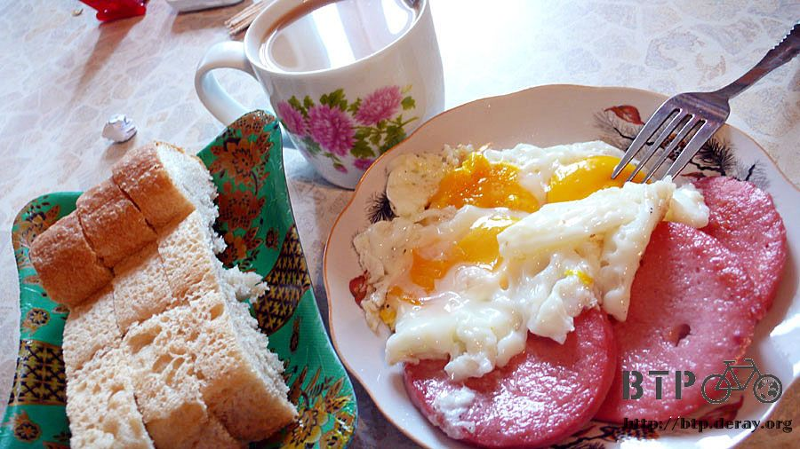
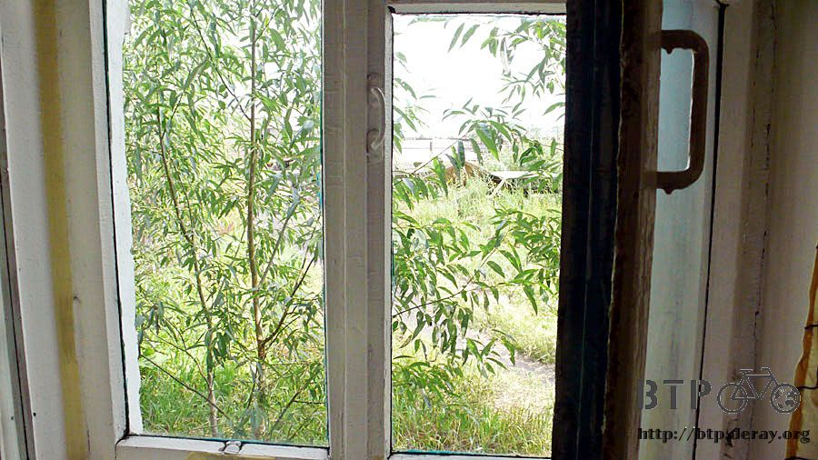
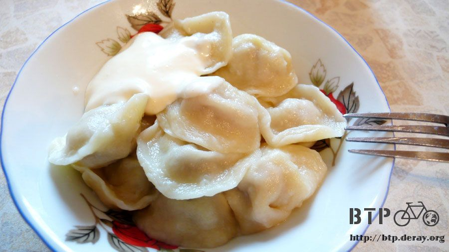
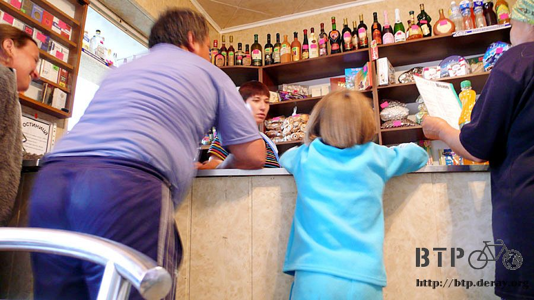

繪畫天份
我相信很多事情除了靠努力之外，其實都是要講天份的，而繪畫就是其中的一項。
記得國小的時候上繪畫課還會被老師誇獎，怎麼長大之後畫得反而沒有小學好。
住在這間旅館很幸福，房間舒適又清靜，床鋪雖多但是沒有其它人和我一起睡，全都是我的地盤。
餐廳就附設在旅館裡，廚師娘各個都是料理高手，想吃什麼美食都有，前提是會點菜的話～
因為要在這裡休息一天，我本來打算將菜單上所有的東西依照順序全部吃過一次。
昨天晚餐是其它客人幫我點了小瓦罐裝的馬鈴薯燉牛肉，雖然好吃，但是這兩個東西我都吃得好膩呀。
看著別桌吃的食物，我才跟著點到一碗洋蔥麵，這吃起來比較有中國風味。
睡醒的時候洗把臉準備吃早餐，餐廳空無一人，想跟著別人點菜也沒辦法。
我拿出紙筆開始畫圖，先畫一隻像雞的動物，然後畫兩顆圈圈，表示雞蛋。
接著畫一條像火腿的東西，然後一樣畫兩顆圈圈，表示火腿切片。
自以為畫得很完美，然後拿給廚師娘看，她看著我的畫作，一臉迷惑，表示看不懂，接著拿給其它人看，也是一頭霧水。
非常打擊我對於繪畫的自信心，後來加上比手畫腳，才如願以償的點到這份早餐。

這陣子哈薩克老是下雨，昨天也是夜裡風雨聲不斷，早上才停歇，到外頭一看都是遍地泥濘和積水，
天空中的雲層也是濃的散不開，大白天看起來就像黃昏一樣陰沉，難道現在是雨季嗎？
吃過早餐之後有很充裕的時間可以在房裡整理英文版的遊記，目前已經有八位高手不辭辛勞、不求報酬的在翻譯遊記，我也得趕緊將翻譯好的作品上線才行。
哈薩克的旅行已經快要騎完了，距離國境剩下一天的路程，接著就要進行俄羅斯篇。
好好的規劃接下來的路線，雖然出發前就擬好了路線圖，但實際騎乘的時候，大概只有六成是依照規劃的路線在走，
變數太多了，天候、路況、健康，加上不可測的突發事件，還有六成是依照計劃在進行已經讓我很感動了。

中午的時候繼續去餐廳報到，繼續用畫圖法點餐。
剛剛我看到有幾個阿姨在包餃子，我就在紙上畫了一個碗和兩顆水餃，結果還是沒人看得懂，我好傷心T_T
用畫的不行那就用比的吧，我開始表演用空氣包水餃，包到第七顆的時候，終於有一個阿姨看出了我不是在發神經，是想吃餃子。
若依照天份來衡量，我比較適合當演員而非畫家。
能夠將心裡的想法傳達出去的瞬間好開心呀，不止我開心，所有的餐廳阿姨都很高興終於聽懂我想說什麼。
午餐就吃餃子，配上一大匙的奶酪，餃子有兩種口味，比較大顆的裡面包馬鈴薯(怎麼連吃水餃都逃不過馬鈴薯)，小顆的則是包肉餡。

餐廳同時也兼雜貨店，住偏僻地方的人都會開車攜家帶眷的來採買，架子上東西很多，可是一下就被清空。

東西被買完之後就真的沒有了，餐廳的人也不知道什麼時候才會去大城市採買。
昨天才買了一瓶果汁，今天還想喝的時候已經賣光光，剩下的就是酒類和汽水。
吃著午餐，外頭轟隆一聲閃電，然後又開始下雨，儘管下吧，不然這麼陰的天，也不知道要何時才會放晴。
希望俄羅斯的天氣比哈薩克穩定一些，不要動不動就是嘩啦啦的天氣。
今天很認真的在休息，移動的範圍只有餐廳和房間兩個地方，最遠只去了外面的廁所三次。
當初想說旅途中會有一些空閒的時間，除了帶本書看之外，也帶了一些電影、影集等，這些東西對於殺時間實在太好用了。
下午連續看了好幾部北野武的電影，他真是一個很會寫劇本、又會當導演、自己也愛演戲的奇人。
看著看著就晚上十點多了，因為整天都沒什麼在活動，怕吃太多變胖會增加小多的負擔，所以晚餐就省起來吧～
繼續閱讀：7.19 再等等～
哈薩克-堅戈－ 1：0.26 台幣
7.18 |
總計：1290元 |
早餐咖啡、煎蛋、火腿、麵包260元、午餐兩種口味的水餃320元、點心草莓果汁、冰淇淋110元、旅館600元 |
|